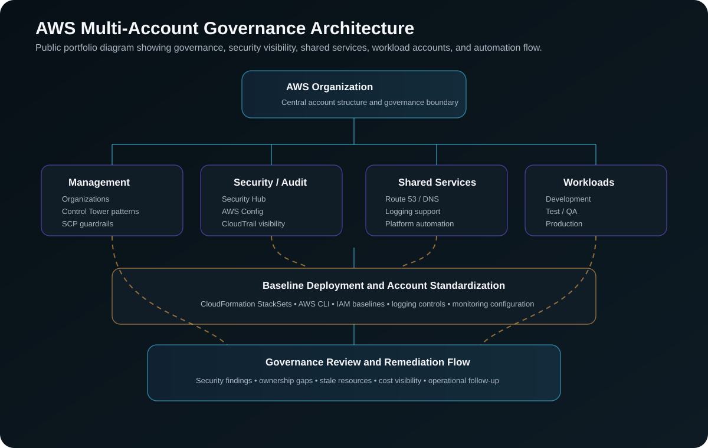

Project Documentation
Multi-Account Cloud Governance
This case study documents how I supported and improved AWS multi-account governance across an enterprise cloud environment. The focus was account structure, IAM controls, SCP guardrails, logging, monitoring, security visibility, and repeatable operating patterns that helped teams use AWS in a more controlled and consistent way.
Overview
As AWS usage grows, governance becomes more important than simply creating accounts and giving teams access. Each account needs to follow a consistent operating model for security, logging, monitoring, access control, ownership, and compliance review.
In this environment, the work involved supporting governance across more than 30 AWS accounts. These accounts included application workloads, development and test environments, production environments, shared services, security visibility, and operational support boundaries.
Problem
The main challenge was consistency. When accounts are created or managed manually, small differences can appear over time. Those differences can affect IAM permissions, logging coverage, monitoring, security reporting, cost visibility, and ownership tracking.
The business needed a more repeatable governance model so cloud operations could identify risk, support application teams, and maintain a standard baseline across different AWS accounts.
Architecture
The governance model used AWS Organizations as the central structure. Accounts were separated by purpose so that production workloads, development workloads, shared services, security visibility, and operational tooling could be managed with clearer boundaries.

What I Did
My work focused on maintaining and improving the governance layer around the AWS account structure. This included reviewing account-level configuration, supporting IAM patterns, working with security tooling, helping with operational reporting, and supporting automation used to standardize cloud controls.
I worked with IAM roles, permissions, service-linked roles, SCP-related governance, CloudTrail, AWS Config, Security Hub, CloudWatch, CloudFormation, StackSets, and AWS CLI workflows. The goal was to make the environment easier to operate, easier to review, and less dependent on one-off manual configuration.
Implementation Approach
1. Reviewed the account structure
I started by understanding how accounts were grouped and used. This included identifying production accounts, non-production accounts, shared service accounts, security-related accounts, and accounts used for application or platform operations.
2. Reviewed access and governance controls
I reviewed how access was managed across accounts, including IAM roles, permission boundaries, service-linked roles, and organization-level guardrail patterns. The goal was to understand where permissions were standardized and where additional review or cleanup was needed.
3. Supported baseline standardization
I supported repeatable baseline patterns using CloudFormation and StackSets. This helped reduce manual drift and made it easier to apply common configuration across multiple AWS accounts.
4. Improved security and operational visibility
I used security and monitoring services such as Security Hub, AWS Config, CloudTrail, and CloudWatch to support visibility into account posture, findings, logging, and operational health.
5. Supported review and remediation workflows
I helped surface findings, ownership gaps, stale resources, cost concerns, and remediation items during cloud operations and governance reviews.
Security and Governance Considerations
Account separation helped reduce blast radius between environments. IAM and SCP guardrails helped control what actions could be performed. Centralized logging and security tooling helped provide visibility across accounts. These controls were important because governance has to work across many teams and workloads without slowing delivery down unnecessarily.
Outcome
The work improved consistency across more than 30 AWS accounts and supported a stronger operating model for cloud governance. It also improved visibility into security posture, access patterns, logging coverage, monitoring, and remediation follow-up.
The result was a more controlled cloud environment with better structure around governance, security reviews, operational support, and account-level standardization.